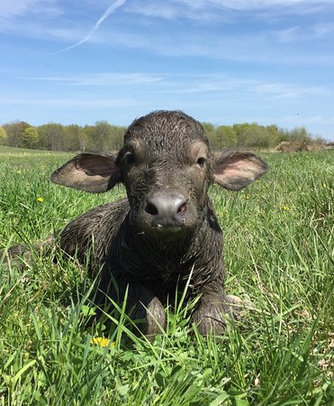

Trau
Họ Trâu bò được biết đến trong các mẫu hóa thạch từ Tiền Miocen, khoảng 20 Triệu năm trước. Các loài dạng bò sớm nhất, như Eotragus, là các động vật nhỏ, hơi tương tự như linh dương Gazelle ngày nay và có lẽ đã sống trong môi trường đồng rừng. Số lượng loài họ Trâu bò gia tăng mạnh vào Hậu Miocen, khi nhiều loài thích nghi với môi trường đồng cỏ và thoáng đãng hơn.[4]
Số lượng lớn nhất về số loài hiện tại là họ Trâu bò thuộc về châu Phi nhưng họ trâu bò thuộc về châu Á và Bắc Mỹ lại ít đa dạng hơn. Người ta cho rằng nhiều loài họ này đã tiến hóa ở châu Á nhưng không thể sống sót do sự săn bắt của các loài người đến từ châu Phi vào cuối thế Pleistocen. Ngược lại, các loài châu Phi có nhiều nghìn hay vài triệu năm để thích nghi với sự phát triển dần dần trong kĩ năng săn bắn của con người. Tuy nhiên, nhiều loài trong họ này được thuần hóa lại có nguồn gốc châu Á (dê, cừu, trâu và bò Tây Tạng).
Một lượng nhỏ các loài hiện đại trong họ Trâu bò thuộc châu Mỹ là tương đối gần đây theo đường cầu đất liền Bering, nhưng chúng vẫn đến khu vực này trước khi con người đặt chân tới đây.
| Phan Loai Khoa Hoc |  | ||||||
|---|---|---|---|---|---|---|---|
| Lop | Thu | ||||||
| Bo | Mong Guoc | ||||||
| Ho | Trau bo0 | ||||||
| Phan Loai | |||||||
|
|||||||